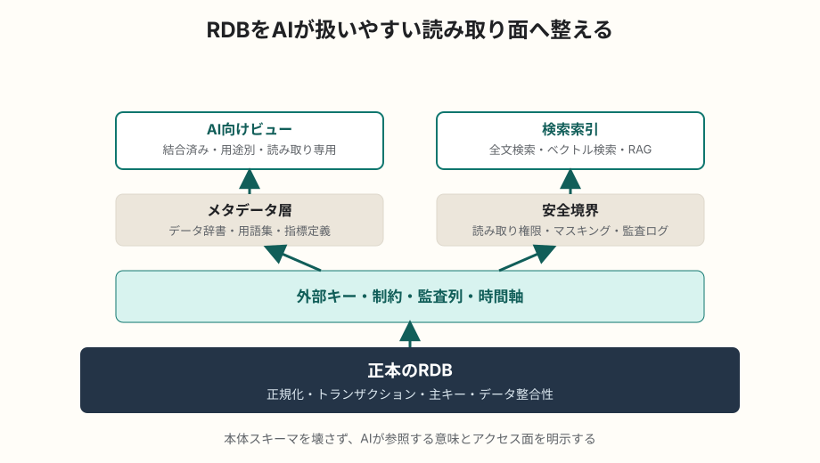

AI / データ設計
リレーショナルデータベースをAIフレンドリーに再構築する手法
AIフレンドリーなDB設計とは、AIが勝手に理解できる魔法の構造にすることではありません。意味、制約、関係、権限、検索しやすい読み取り面を明示し、人間とAIの両方が安全に問い合わせられる形へ整えることです。
簡潔なQ&A
- Q. リレーショナルデータベースをAIフレンドリーにするには何をすればよいか？
- A. 既存の正規化DBを捨てるのではなく、意味が伝わる命名、外部キーや制約、データ辞書、AI向けビュー、検索用インデックス、権限境界を追加して、AIが安全に理解・検索・集計できる層を作ります。
- Q. ベクトルDBに移行すればよいのか？
- A. 多くの場合は違います。取引データや業務データの正本はRDBに置き、自然言語検索や類似検索が必要な部分だけベクトル索引やRAGを併用します。
- Q. 最初に着手すべきことは？
- A. テーブル名、カラム名、主キー、外部キー、ステータス値、重要な業務ルールを棚卸しし、AIにも人間にも説明できるメタデータとして整備することです。

AIフレンドリーな設計とは何か
LLMやAI Agentがデータベースを扱うときに困るのは、SQLを書けるかどうかだけではありません。テーブルやカラムの意味が曖昧、外部キーが定義されていない、ステータス値の意味が文書化されていない、同じ概念が複数名で存在する、権限の境界が不明、といった問題があると、AIはもっともらしい誤った問い合わせを作りやすくなります。
AIフレンドリーなDBは、AIが「意味を推測する」余地を減らし、確認可能なメタデータと制約に基づいて問い合わせられるDBです。これは人間の開発者やアナリストにとっても扱いやすい設計です。
有用とされる技法
1. 意味が伝わる命名に寄せる
テーブル名、カラム名、制約名は、業務概念が読み取れる名前にします。略語や歴史的経緯だけで決まった名前は、AIにも新任者にも誤解されやすくなります。たとえば mst、flg、kbn のような省略は、データ辞書で意味を補うか、可能なら明示的な名前へ寄せます。
2. 外部キー、ユニーク制約、チェック制約を明示する
AIはスキーマ情報を見て結合候補を推定します。外部キーがないDBでは、名前や値の分布から結合を推測するため、誤結合が起きやすくなります。外部キー、ユニーク制約、NOT NULL、CHECK制約、列挙値は、AIにとっても重要な「機械可読な説明」です。
3. データ辞書と用語集をスキーマに近い場所で管理する
各テーブルの目的、カラムの意味、単位、値の範囲、更新タイミング、PIIや機密区分、代表的な使い方を記録します。DBコメント、マイグレーション、データカタログ、Markdownなど、運用に乗る形で管理することが重要です。AIに渡すコンテキストは、このメタデータから生成できます。
4. AI向けの読み取り専用ビューを作る
正規化された本体スキーマは更新整合性に強い一方、AIが自然言語から直接SQLを作るには複雑すぎることがあります。その場合は、問い合わせ用途ごとに読み取り専用ビューやマートを作ります。よく使う結合、表示名、集計粒度、論理削除の除外、権限フィルタをあらかじめ組み込むと、AIのSQL生成ミスを減らせます。
5. 自然言語検索用のテキスト面を用意する
RDBの行をそのままAIに渡すのではなく、検索に使う説明文を生成しておく方法があります。たとえば商品、案件、問い合わせ、ナレッジのようなレコードに対し、主要属性をまとめた検索用テキストを作り、全文検索や埋め込み検索の対象にします。正本はRDB、検索索引は補助層と分けるのが基本です。
6. ベクトル索引やハイブリッド検索を補助的に使う
自然文の問い合わせ、類似する問い合わせ履歴、仕様書、FAQ、自由記述欄を扱う場合は、キーワード検索とベクトル検索を組み合わせると有効です。ただし、金額、日付、ステータス、権限、在庫数のような厳密条件はRDBの構造化検索に任せるべきです。意味検索と厳密検索の役割を分けます。
7. 監査列と時間軸を整える
AIが「いつ時点の情報か」を判断できるように、作成日時、更新日時、有効開始日、有効終了日、削除日時、データソース、同期時刻を明確にします。履歴テーブルやイベントテーブルがある場合は、現在値と履歴の違いをメタデータに明記します。
8. 権限と安全境界をDB設計に組み込む
AIにDBアクセスを与える場合、読み取り専用ユーザー、行レベルセキュリティ、列マスキング、ビュー経由アクセス、クエリ時間制限、監査ログが重要になります。AI向けだから広い権限を与えるのではなく、AIが参照してよいデータ面を限定します。
9. サンプルクエリと禁止パターンを用意する
よくある質問に対する正しいSQL例を用意すると、AIはそれを手本にできます。同時に、重い全表スキャン、曖昧な日付条件、削除済みデータを含む問い合わせ、機密列の参照など、避けるべきパターンも定義します。これはLLMのプロンプトだけでなく、SQLレビューやクエリガードにも使えます。
再構築の進め方
- 既存スキーマ、実クエリ、BIレポート、障害履歴を棚卸しする。
- テーブルとカラムの意味、結合関係、更新元、機密区分をデータ辞書にする。
- 外部キーや制約を追加できる箇所から明示する。
- AIや分析が使う読み取り専用ビューを、用途別に小さく作る。
- 自由記述や文書系データには全文検索・ベクトル検索の補助索引を作る。
- AIが実行できるSQLの権限、タイムアウト、監査ログ、承認フローを決める。
- 実際の質問セットで評価し、誤結合、権限漏れ、回答不能の原因を改善する。
正規化とAIフレンドリー化は対立しない
AIフレンドリー化という言葉から、テーブルを大きく非正規化すべきだと考えたくなります。しかし、更新整合性が必要な正本データでは、通常どおり正規化、制約、トランザクションが重要です。AI向けには、本体スキーマを壊すのではなく、ビュー、マート、検索索引、メタデータ層を重ねる方が扱いやすくなります。
例外として、分析や検索のための読み取り専用データマートでは、あえて非正規化する価値があります。ただし、その場合も生成元、更新頻度、粒度、正本との差分を明記しておく必要があります。
よくある誤解
- AI向けにすれば、雑なスキーマでもAIが補ってくれる、という考えは危険です。曖昧さは誤回答の原因になります。
- ベクトルDBはRDBの置き換えではありません。類似検索の補助として使うのが基本です。
- プロンプトだけで安全性を担保するのは不十分です。DB権限、ビュー、監査、実行制限で守る必要があります。
- AIがSQLを生成できても、業務上正しい集計定義を知っているとは限りません。指標定義と用語集が必要です。
要点
リレーショナルデータベースをAIフレンドリーにする核心は、正本データを崩すことではなく、意味、制約、メタデータ、読み取り専用ビュー、検索索引、安全境界を整えることです。AIが推測でSQLを書く余地を減らし、確認可能な構造に寄せるほど、人間にもAIにも扱いやすいDBになります。